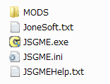
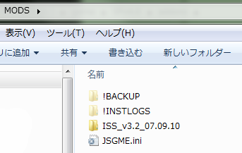
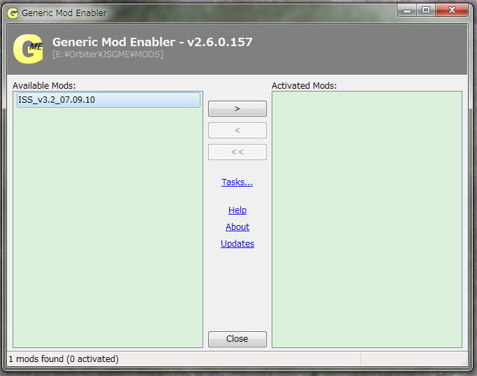

JSGMEを使ったMODのインストール
JSGMEを使うと、MODのインストールやアンインストールが容易になります。
MODを新しいバージョンに更新したり、ほかのMODと相性の悪いMODを外したりするのに便利です。
JSGMEのダウンロード+インストール
ダウンロードは以下のリンクから。※
※JSGMEの再配布は「改変しない・営利目的で配布しない」場合に限り、作者（Jaesen Jones氏）により認められています。
ダウンロードしたファイルを解凍して、中身をすべてOrbiterのインストールフォルダにコピーする。

MODの導入
インストールが終わったら、JSGME.exeをダブルクリック。
ダウンロードしたMODを解凍して、MODの名前が書かれたフォルダごとMODSフォルダにコピーする。

重要：MODの中身（ConfigフォルダやModulesフォルダ）を直接MODSフォルダにコピーしないでください。
Orbiterフォルダ\MODS\MODの名前\ConfigフォルダやModulesフォルダ、という階層構造にしてください。
MODSフォルダにMODフォルダをコピーしたら、JSGMEを起動する。

インストールしたいMODの名前をクリックして、中央の>をクリックすると、MODがインストールされる。
MODを外したいときは、右側に表示されたMODの名前をクリックしてから<をクリックする。
既存のMODと干渉する場合は警告が出るようになっていますが、上書きしても問題ない場合と、そうでない場合があります。
マニュアルを参照するか、実際にインストールして確認してください。